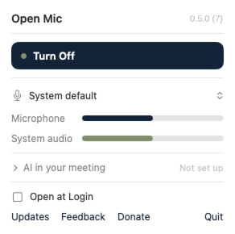

Open Mic
Invite any AI to your meeting.
Your voice, their voices, and your AI's voice.
OpenMic connects the AI you already use with your online meetings, in both directions.
Your AI doesn't just hear the meeting — everyone in the meeting hears your AI.

Once you’re set up, just two steps.
First, install Open Mic and its audio driver, then grant the required microphone and system audio permissions.
- Open Open Mic from the menu bar and click Turn On.
- In your AI app, choose Open Mic as the microphone input.
Click Turn Off when you’re done. The standard Open Mic input stays installed but sends no audio while off. No manual audio routing is needed.
Let AI hear the meeting and speak in it.
For two-way audio, open AI in your meeting and choose an AI app and a Meeting app. Then select the matching microphone input in each app. Open Mic doesn’t change either app’s microphone setting for you.
| Where to select it | Microphone input | Audio it sends |
|---|---|---|
| AI app (basic use) | Open Mic | Your mic + audio playing on your Mac* |
| AI app (two-way) | Open Mic › AI | Your mic + audio from the selected meeting app |
| Meeting app (two-way) | Open Mic › Meeting | Your mic + audio from the selected AI app |
These routes don’t send the AI app’s playback back to the AI app, or the meeting app’s playback back to the meeting app. Your mic goes to both.
Run the AI and the meeting in different apps or browsers, not in separate tabs of the same browser. The two dedicated inputs are available while Open Mic is supplying audio and the AI app and Meeting app are different. If an input is missing, check your app selections, make sure Open Mic is on, and restart the app that needs the input.

Try it before an important meeting.
In a test on a Mac with a Chrome tab and a Safari tab, both sides heard each other’s audio and the tester’s voice.
This is a beta. Calls in meeting apps and the effect of browser audio processing on sound quality haven’t been verified. Check what other participants can hear before relying on it in an important meeting.
ON means Open Mic is supplying audio. Enabled means the dedicated inputs are available. Neither confirms that the other side is receiving audio.
Open Mic itself doesn’t record, transcribe, or automate your AI.